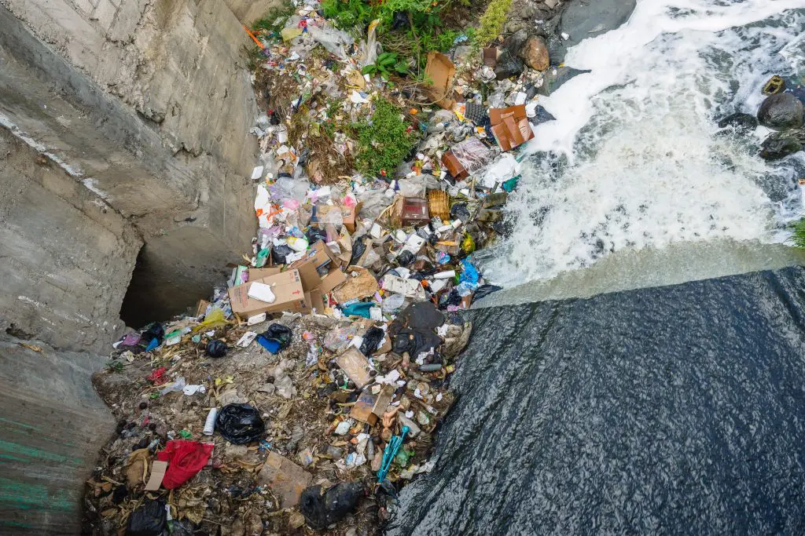

Linha do Tempo
Cidades Pequenas
No início do século XX, as cidades pequenas do Brasil eram centros de comércio agrícola, com infraestrutura básica e poucas comodidades.
- População urbana < 20%
- Infraestrutura limitada
- Centros comerciais rurais
Industrialização
A industrialização levou a um rápido crescimento urbano, mudando a estrutura social e econômica.
- Surgimento de polos industriais
- Migração rural-urbana intensa
- Expansão de cidades médias
Êxodo Rural
Crescimento desordenado gerou favelas e inchaço populacional.
- Favelas se expandem nas grandes cidades
- Pressão sobre serviços públicos
- Urbanização rápida e desordenada
Estatuto da Cidade
Lei que regulamenta o uso do espaço urbano, buscando cidades mais justas e sustentáveis.
- Planejamento urbano formalizado
- Foco em sustentabilidade
- Direito à moradia e uso do solo
Censo Urbano
87% dos brasileiros viviam em áreas urbanas; ritmo de crescimento populacional mais baixo.
- Cidades modernas e conectadas
- Planejamento urbano avançado
- Desafios: mobilidade e sustentabilidade
Era Vargas
Na Era Vargas (1930–1945), o Brasil passou por um processo intenso de industrialização, marcado pela transformação de uma economia agrícola em uma economia mais urbana e industrial. O governo Vargas incentivou a substituição de importações, ou seja, a produção interna de bens que antes eram comprados do exterior, como tecidos, alimentos industrializados e aço. Houve também forte intervenção do Estado, com a criação de empresas estatais estratégicas, como a Companhia Siderúrgica Nacional (CSN), e políticas de proteção à indústria nacional. Além disso, a industrialização gerou urbanização e novos empregos, acompanhada de legislação trabalhista, como a CLT de 1943, que regulava as relações entre trabalhadores e empresas. O objetivo era tornar o Brasil economicamente mais independente e moderno.
{kind=link}
Causas da Urbanização
O intenso êxodo rural no Brasil foi impulsionado pela modernização da agricultura, que reduziu a necessidade de trabalhadores no campo, e pela industrialização das cidades, que oferecia empregos e melhores condições de vida. Esse movimento transformou o país de rural para predominantemente urbano em poucas décadas, provocando crescimento rápido e desordenado das cidades, surgimento de favelas, pressão sobre serviços públicos e mudanças culturais. Ao mesmo tempo, regiões rurais sofreram com escassez de trabalhadores e desigualdades regionais.
Consequências
A urbanização no Brasil trouxe consequências tanto econômicas quanto sociais. Do ponto de vista econômico, a concentração da população nas cidades impulsionou o crescimento industrial, o comércio e os serviços, aumentando o Produto Interno Bruto (PIB) das áreas urbanas e atraindo investimentos em infraestrutura, como transporte, habitação e energia. No entanto, esse crescimento nem sempre foi equilibrado, resultando em desigualdade econômica, com concentração de renda nas regiões centrais e diferenças significativas entre cidades e regiões. Socialmente, a urbanização provocou o êxodo rural, o crescimento desordenado das cidades e a formação de favelas e periferias com condições precárias de moradia. Houve aumento da desigualdade no acesso a serviços públicos, como saúde, educação e saneamento, além de problemas ambientais urbanos, como poluição, enchentes e degradação de áreas naturais. Ao mesmo tempo, as cidades passaram a concentrar diversidade cultural, novas formas de lazer e estilos de vida urbanos, transformando profundamente a sociedade brasileira.
Fonte: eCycle
Soluções
Para minimizar os impactos negativos da urbanização no Brasil, é necessário investir em planejamento urbano sustentável, garantindo que as cidades cresçam de forma organizada e equilibrada. A implementação de políticas habitacionais eficazes pode reduzir a favelização e melhorar a qualidade de vida nas periferias, oferecendo moradia digna e acesso a serviços básicos. É fundamental também investir em infraestrutura de transporte e mobilidade urbana, tornando o deslocamento mais eficiente e reduzindo o trânsito e a poluição. A expansão de serviços públicos, como saúde, educação e saneamento, deve acompanhar o crescimento urbano para diminuir desigualdades sociais. Além disso, políticas de desenvolvimento regional podem incentivar o crescimento econômico em cidades menores, reduzindo a pressão sobre os grandes centros urbanos. Por fim, a promoção da consciência ambiental e uso sustentável dos recursos ajuda a prevenir a degradação e a poluição, tornando as cidades mais habitáveis.
Gráficos
.jpeg)
Mapa do Brasil